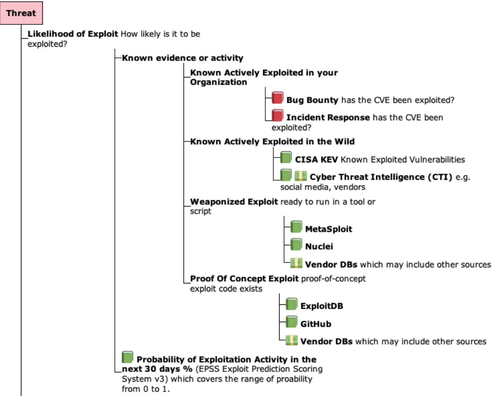

Takeaway¶
Overview
Throughout this guide, the building blocks for Risk Based Prioritization have been detailed and analyzed.
In this final section, we summarize the Takeaways and provide specific recommendations for Risk Based Prioritization.
At this point, you should be able to
- Understand Risk
- the main standards and how they fit together
- the key risk factors, especially known exploitation and likelihood of exploitation
- Apply this understanding, and code, data provided to Prioritize CVEs by Risk for your organization, resulting in
- a significant reduction in your security effort
- a significant improvement in your security posture by remediating the higher risk vulnerabilities first
Takeaways
Prioritize vulnerabilities by Exploitation to Reduce Cost and Risk¶
Only about 5% or fewer of all CVEs have been exploited.
Prioritizing vulnerabilities that are being exploited in the wild, or are more likely to be exploited, reduces the
- cost of vulnerability management
- risk by reducing the time adversaries have access to vulnerable systems they are trying to exploit
Use a Risk Based Prioritization Scheme that supports Exploitation Evidence and Likelihood Of Exploitation (EPSS)¶
“The focus should be given to those known to be exploited in the wild (CISA KEV), those with a high likelihood of exploitation (indicated by a high EPSS score), and those with weaponized exploit code available”

- For those using CVSS Scores and Ratings, using CVSS v3 Temporal Metric - Exploit Code Maturity (E) that supports Exploitation evidence is a small step with a relatively small (de)prioritization of CVEs.
- Either CVSS Base Score Ratings with Exploitation Focus or SSVC Decision Trees, that Focus on Exploitation, are bigger steps, with a bigger (de)prioritization of CVEs.
This can run automatically as a First Pass Triage, before additional business and runtime context is added.
Refine the Risk Based Prioritization scheme based on your environment and your data.¶
- Use CVEs detected in your Incident Response, Bug Bounty, PenTesting findings to inform your Risk.
- For EPSS:
- Assess EPSS for YOUR Environment
- Start by picking an EPSS Threshold around 10%, and adjust based on your CVE data and your capacity to remediate the CVEs above that Threshold (in conjunction with CVSS Severity or other Risk factors) per Remediation Policy for an Enterprise
Be Careful with Proprietary Risk Based Prioritization Schemes¶
If you implement a proprietary Risk Based Prioritization scheme, keep the following in mind:
Quote
Any person can invent a security system so clever that she or he can't think of how to break it.
If you use a proprietary third-party Risk Based Prioritization scheme, keep the requirements above, and the following, in mind:
Warning
Beware of claims of "secret sauce", "special Intellectual Property", "unique proprietary intel" as reasons to prevent you understanding the Risk Based Prioritization scheme.
A Commercial CTI solution is Recommended¶
While gathering vulnerability exploitation evidence can be done using public data (as shown in the code for this guide which used some data sources), there's a lot of effort in getting current, comprehensive CTI.